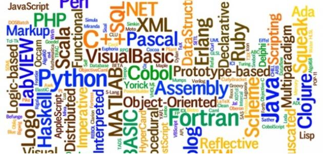

main page of Programming Languages

links :
introduction to programming languages
What is a Programming Language?
is a notational system for
describing computation ¡n a machine-readable and
human-readable form.
is a tool for developing
executable models for a class of problem domains
Nowadays many programming languages have become more general and multipurpose but these languages have their specialties, and each language has its advantages and disadvantages Usually programming languages can be classified into several types, however, these languages support a multiple programming style Every year, a number of programming languages are implemented but very few languages have become so common that a professional programmer may use them in their careers.
Programming languages are used to control the performance of a computer or deviceNowadaysa computer programmer has many options for choosing a languagebut there are many differences between programming languagesThereforethis article provides brief information on the different types of programming languages, and the differences between programming languages and types of programming languages in useful ways.